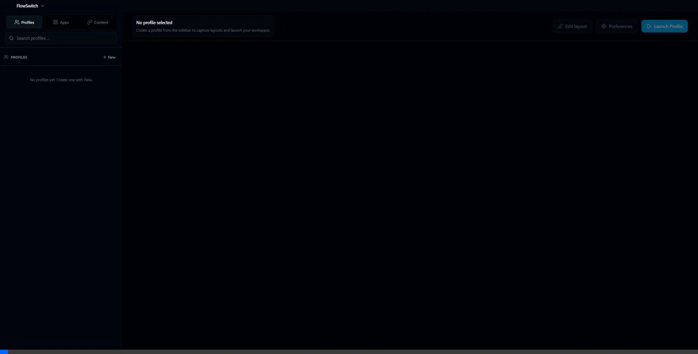
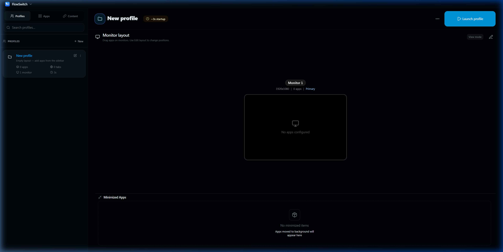
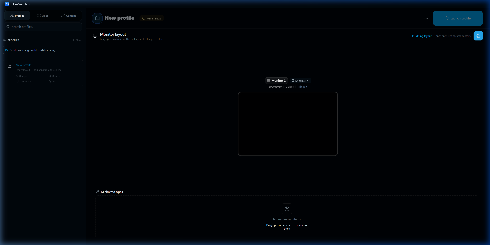

Capture your layout
Record every window, monitor, and workspace edge so your setup is remembered exactly as you left it.
FlowSwitch captures your window arrangements, snaps them across multiple monitors, and restores your flow instantly. Built natively for Windows power users.
Could not refresh release metadata. If the button opens a GitHub error page, the Windows build may not
be attached to
release v0.1.0
yet—check
Actions
for the Release workflow, then confirm both .exe files appear under that release.

How FlowSwitch helps
Capture once. Restore in one gesture. Native speed, no cloud required.
Record every window, monitor, and workspace edge so your setup is remembered exactly as you left it.
Jump between deep work, meetings, and play with hotkeys or the tray—without rebuilding your desk by hand.
Relaunch apps, reopen browser tabs where they belong, and snap everything back across mixed DPI screens.
Core superpowers
Stop dragging windows back every morning. FlowSwitch remembers your exact layout.
Mixed DPI, horizontal or vertical layouts, virtual desktops. FlowSwitch identifies every screen accurately.

Create separate flows for coding, gaming, or writing. Switch instantly with hotkeys.

Capture layouts intuitively across all displays.

Talks directly to the Windows registry and shell. No bulky polling overhead.
Requirements
64-bit Windows 10 or Windows 11. Multiple monitors and mixed DPI are first-class scenarios.
New Windows builds may show SmartScreen prompts until the app establishes reputation.
FAQ